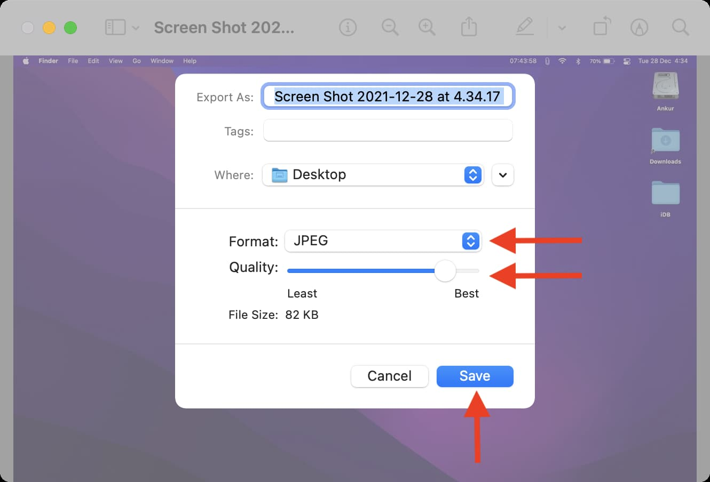

Compress images safe and secure always! Privacy matters
In today's digital world, where images are a significant part of our lives, it's
important to optimize
their size without compromising quality. Compressing images on your Mac can help save valuable storage
space, improve website performance, and facilitate seamless file sharing. In this guide, we'll explore
various methods and tools available to compress images effectively while maintaining their visual
integrity.

-
Method 1: Using Preview
Mac's default image viewer, Preview, offers a straightforward and efficient way to compress
images.
- Step 1: Open the image you want to compress in Preview.
- Step 2: Click on "File" in the top menu and select "Export."
- Step 3: In the export dialog box, choose the desired format (JPEG, PNG, etc.) and adjust the
quality slider to reduce the file size. Preview provides a real-time preview of the
compressed
image, allowing you to strike a balance between quality and size.
- Step 4: Click "Save" to export the compressed image to your desired location.
-
Method 2: Leveraging the Mac Photos App
If you have multiple images to compress, the Photos app provides a convenient option.
- Step 1: Launch the Photos app on your Mac.
- Step 2: Select the images you want to compress by holding down the Command key and clicking
on
each image.
- Step 3: With the images selected, go to "File" in the top menu and choose "Export" > "Export
Photos."
- Step 4: In the export dialog box, select the format and adjust the size options based on
your
requirements.
- Step 5: Click "Export" to compress and save the images to your desired location.
-
Method 3: Utilizing Third-Party web Applications
For more advanced compression options and additional features, you can turn to third-party
applications available for Mac.
- nothingbutcompress: If you primarily work with JPEG images, the JPEG Optimizer tool allows
you
to compress and optimize your files easily. It offers a slider to adjust the compression
level,
enabling you to find the perfect balance between file size and image quality.
- TinyPNG: TinyPNG is a user-friendly tool specifically designed for compressing PNG images.
It
leverages smart lossy compression techniques to reduce file sizes without compromising
visual
quality.
-
How to compress on this site?
- Go to https://nothingbutcompress.com
- Click on upload files and upload without any limit
- Compress images to your desired quality for free by sliding the range
- Click on dowload
-
Additional Tips for Optimizing Images:
In addition to compression, consider implementing the following practices to further enhance
image optimization:
- Resize images: Scale images to the required dimensions before compressing them. This reduces
the image file size without sacrificing quality.
- Leverage responsive images: Use the HTML "srcset" attribute to serve different image sizes
based on the user's device, further improving loading speed.
- Enable lazy loading: Load images only when they are visible in the user's viewport, reducing
initial page load times.
The Importance of Safe Image Compression for SEO
Optimizing website performance is crucial in delivering exceptional user
experiences. Compressing images
online is a powerful technique to boost your site's loading speed, decrease bounce rates, and improve
search engine rankings. By selecting the right compression format and utilizing reputable online tools,
you can strike the perfect balance between image quality and file size. Incorporate image compression
into your web development workflow to ensure your website is a blazing-fast online destination for
visitors.
listen audio